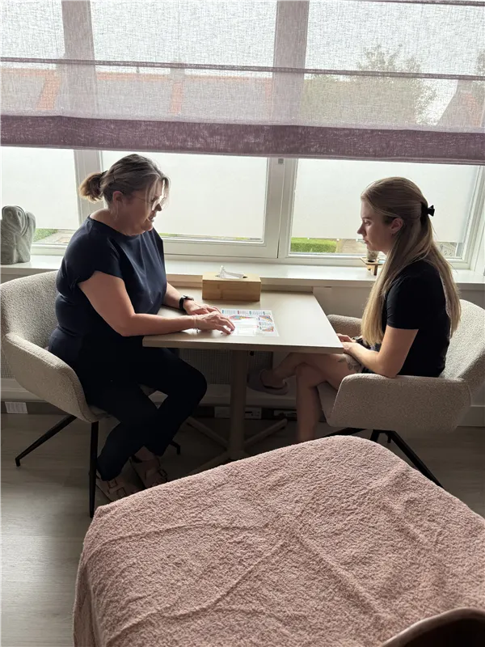

Veelgestelde vragen
Hier vind je antwoorden op de vragen die ik het vaakst krijg. Klik op een vraag om het antwoord te lezen.
Je eerste afspraak
Wat kan ik verwachten tijdens een eerste behandeling?
Bij de eerste afspraak nemen we eerst even de tijd voor een kort intakegesprek: wat speelt er, waar loop je tegenaan en wat hoop je te bereiken. Daarna volgt de behandeling zelf, in een rustige, veilige omgeving. Na afloop bespreken we samen wat ik heb gevoeld en wat een goed vervolg zou zijn.
Hoe lang duurt een behandeling en wat kost het?
Een voetreflexbehandeling duurt 45 minuten, een holistische total body massage 60 minuten en een combibehandeling 75 tot 90 minuten. Bij een eerste afspraak neem ik extra tijd voor de intake, zodat dat niet van je behandeltijd afgaat. De kosten vind je op de pagina behandelingen en tarieven. Neem gerust contact op als je twijfelt of een bepaalde behandeling bij je klacht past.
Moet ik me uitkleden voor een voetreflexbehandeling?
Nee. Voor voetreflextherapie hoef je alleen je sokken en schoenen uit te doen. Bij een holistische massage kleed je je gedeeltelijk uit, tot op je gemak, en lig je onder een handdoek of doek. Jij bepaalt wat prettig voelt.
Wat trek ik het beste aan voor een voetreflexbehandeling?
Comfortabele kleding met wijde pijpen is fijn, zodat je broek makkelijk tot boven je enkels omhoog kan zonder knellen. Sokken en schoenen doe je bij binnenkomst uit.
Moet ik zelf een handdoek meenemen?
Nee, dat hoeft niet. Ik zorg voor schone handdoeken en linnen, jij hoeft alleen jezelf mee te nemen.
Moet ik mijn make-up verwijderen voor een behandeling?
Bij een voetreflexbehandeling is dit uiteraard niet nodig. Tijdens de holistische total body massage wordt ook je gezicht gemasseerd. Het is fijn als je je make-up van tevoren verwijdert, maar ik kan dit ook ter plekke voor je doen. Wil je liever niet dat je gezicht gemasseerd wordt? Geef het gerust van tevoren aan.
Doet het pijn?
Een behandeling mag nooit echt pijn doen. Sommige zones of spieren kunnen gevoelig zijn, zeker als er ergens spanning of een blokkade zit, maar dat voelt eerder als 'gevoelige druk' dan als pijn. Geef het altijd aan als iets niet prettig aanvoelt, dan pas ik het direct aan.
Ik ben kriebelig aan mijn voeten, is dat een probleem?
Helemaal niet, dat komt vaker voor dan je denkt. Een stevige, rustige aanraking voelt meestal al snel anders dan een lichte kriebel. Laat het me weten, dan pas ik mijn aanpak daarop aan.
Behandeling en klachten
Voor welke klachten kan ik bij jou terecht?
Denk aan stress en vermoeidheid, slaapproblemen, spanningsklachten, hormonale klachten, en ondersteuning bij herstel na blessures of overbelasting. Twijfel je of jouw klacht hierbij past? Neem gerust contact op, dan denk ik met je mee.
Kun je me ook helpen bij stress, slaapproblemen of vermoeidheid?
Ja, dit zijn juist klachten waar voetreflextherapie en holistische massage heel goed bij kunnen helpen. Beide behandelingen richten zich op ontspanning van lichaam en zenuwstelsel, wat vaak al na één sessie merkbaar rustiger voelt.
Hoe vaak moet ik komen voor resultaat?
Dat verschilt per persoon en per klacht. Voor acute klachten kan één of enkele behandelingen al verlichting geven; bij chronische klachten werken we vaak in een kort traject van meerdere sessies. Na de eerste afspraak geef ik je een eerlijk advies over wat past bij jouw situatie.
Hoe ziet een behandeltraject eruit?
Elk traject begint met een intake om jouw klacht en wens helder te krijgen. Op basis daarvan stel ik een behandelplan op, meestal opgebouwd in fases: eerst rust en opening, dan gericht werken aan de klacht, en tot slot afronding en advies voor thuis.
Kan ik dit combineren met reguliere medische zorg?
Ja, voetreflextherapie en holistische massage zijn een mooie aanvulling naast reguliere zorg, niet een vervanging ervan. Ben je onder behandeling bij een arts of specialist, meld dit dan bij de intake, zodat ik daar rekening mee kan houden.
Is voetreflextherapie wetenschappelijk bewezen?
Eerlijk gezegd: het wetenschappelijk bewijs voor voetreflextherapie is beperkt en wisselend. Wat ik wel keer op keer terugzie bij cliënten is diepe ontspanning en meer lichaamsbewustzijn, en dat heeft op zichzelf al waarde. Ik beloof je geen wondermiddel, wel een zorgvuldige en deskundige behandeling.
Wat zijn je opleidingen en kwalificaties?
Ik ben gediplomeerd in zowel holistische massage als voetreflextherapie. Ik blijf mezelf continu bijscholen, zodat ik je de best mogelijke behandeling kan bieden.
Kosten en praktisch
Wordt de behandeling vergoed door mijn zorgverzekering?
Nee, de behandeling wordt niet vergoed door de zorgverzekering, omdat ik niet aangesloten ben bij de branchevereniging. Daarnaast wegen de kosten van een aanvullende verzekering niet op tegen de vergoeding die je krijgt vanuit de zorgverzekering.
Hoe kan ik betalen?
Je kunt direct na de behandeling contant betalen of pinnen via tap to pay.
Krijg ik een factuur?
Standaard krijg je geen factuur mee. Heb je er wel een nodig, geef dit dan even aan, dan zorg ik dat je die krijgt.
Waar vind ik de praktijk?
Studio Anja is gevestigd aan de Crocusstraat 5, 5402 ZH in Uden. Bij de voordeur hangt een bordje met de naam van de praktijk, dus je kunt me niet missen.
Staat je vraag er niet bij?
Stel hem gerust. Ik denk graag met je mee.